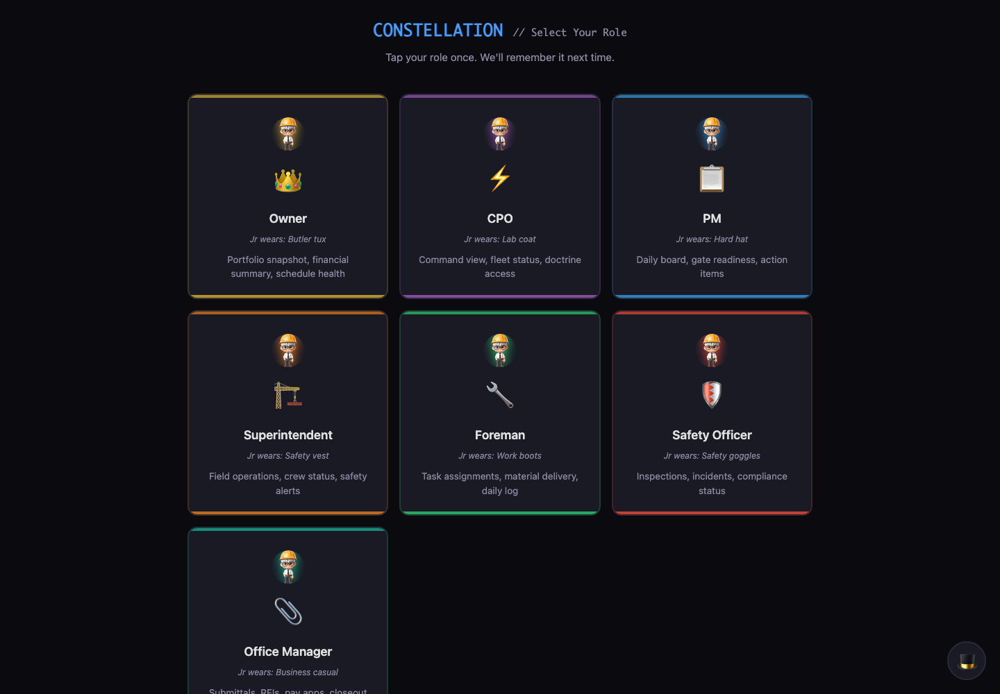
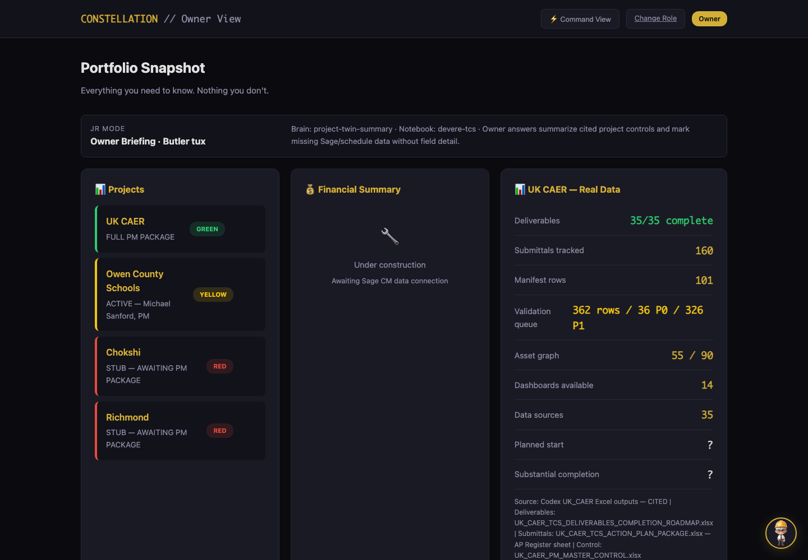

Project digital twins
Each project gets a governed model of contracts, zones, evidence, RFIs, submittals, schedule, commercial controls, and next actions.

Evidence-first operating systems
We build governed digital twins for organizations where the work is real, the evidence matters, and human judgment cannot be hand-waved away.
Constellation is the operating system. Jr is the face. The world model is the governed state. Source chains, citations, and human review keep the system honest.
Each project gets a governed model of contracts, zones, evidence, RFIs, submittals, schedule, commercial controls, and next actions.
Owners, PMs, field teams, and office staff get clear explanations that link back to the actual product and source artifacts.
Every meaningful claim is source-cited, marked inferred, or blocked until the right source or reviewer exists.
Product surface
The live product connects role-based dashboards, NotebookLM-grounded answers, deterministic project data, construction skills, and governed world-model objects.
Read the plain-English walkthrough
Original controls first. Contracts, specs, Sage, drawings, and owner direction outrank generated summaries.
Explain, do not overclaim. Public pages make the system understandable; they do not create project authority.
Update from artifacts. Explanations should be refreshed from graphs, control docs, and live product receipts.
Humans stay in the loop. Review, approval, and reliance gates stay explicit.